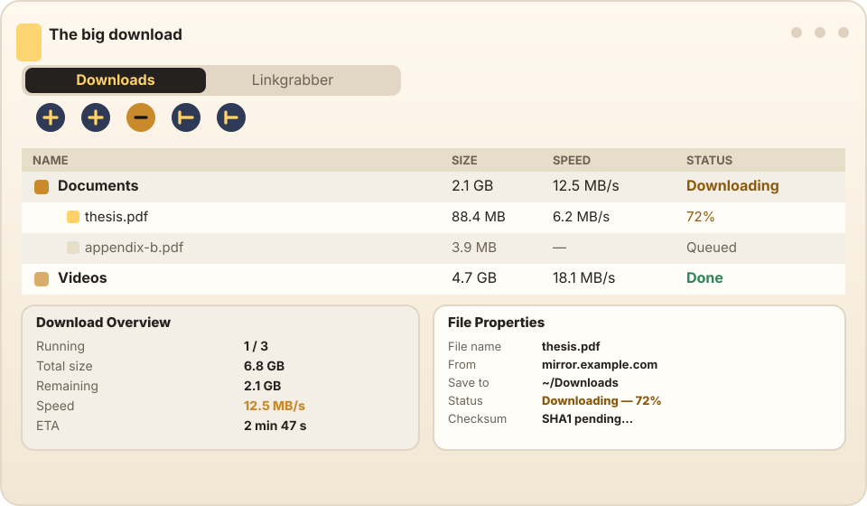

ZDownloader3
The JD2-shaped download manager for Linux — open-source, fast.
ZDownloader3 is a download manager for Linux — one list, a link-grabber tab that turns a pile of pasted URLs into tickable packages, a rule chain (the “Packagizer”) that reorders, renames and re-routes files by regex, and an engine that splits files across connections, resumes, and checks checksums.

A picture of the main window. It's an illustration, not a screenshot — prefer the mockup over a stale capture.
What it does
- JD2-shaped link grabber. Paste links, drop a batch, or let the browser hand them over; they land in packages, ready to tick.
- Package grouping. Split archives across mirror hosts, folders at the same path on the same site, packs of the same file family — grouped and labeled without server-side APIs.
- Packagizer. Ordered rules — move to package, rename, set destination — with variables
<name>,<ext>,<index>,<simpledate:…>,$1…${name}, size and regex conditions, stop-after-rule. - Multi-connection engine. Segmented HTTP/1.1 with resume, mirror-aware chunking, per-host limits, checksum verification, FTP/FTPS.
- Debrid and torrent. Real-Debrid / AllDebrid / Premiumize / TorBox / Mega-Debrid sidebars; magnet and .torrent handling.
- The way IDM is laid out. Sidebar categories, one flat list, per-file speed, progress, today/tomorrow queues, tray with silent mode — the shape you already know.
Why this exists
JDownloader2 is a good download manager and a closed one. This is an MIT/GPL reimplementation with the bits Linux desktops actually need — plain-text config, native fonts, XDG paths, no Java, one binary.
Read more: why JD2-shaped
Fork status
ZDownloader3 is a fork of Mister Download Manager, adapted toward JDownloader2's workflow and Linux packaging. Expect rough edges. The fork's own status lives in roadmap and changelog; upstream changes ship upstream first.
Build & install
Rust and a C compiler are required. On a Debian/Ubuntu/CachyOS-family box:
$ git clone <repo> zdownloader3
$ cd zdownloader3
$ cargo install --path crates/app
$ zdownloader3cargo build --release produces a single binary under target/release/zdownloader3. Packages (.deb / .rpm / AppImage) are built from tools/installer/build-linux.sh; see that script for the toolchain checklist.
GPL-3.0Linux-firstegui/winitRust